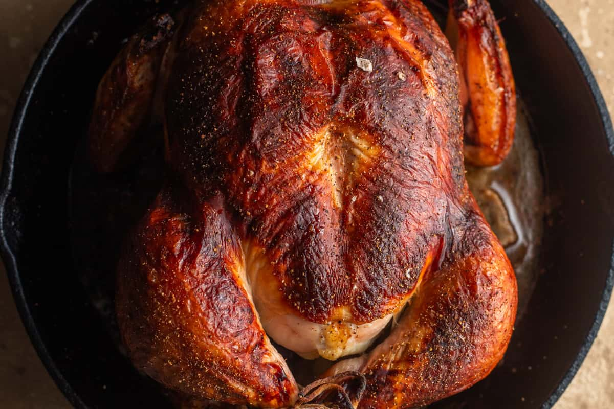

Buttermilk Chicken

Description
This elegant recipe from Samin Nosrat's cookbook, Salt Fat Acid Heat, involves marinating
a whole chicken in buttermilk and roasting it to perfection for a moist and juicy result.
Recipe
Equipment
- 2 Gallon-Size Ziploc Bags
- 1 10-inch Cast Iron Skillet
- 1 Butcher's Twine
Ingredients
- 1 3 1/2 to 4 pounds whole chicken
- 2 tablespoons + 1 teaspoon Diamond-Crystal Kosher salt, divided
- 2 cups buttermilk
- Freshy ground black pepper, optional
Steps
- Prep and season: A day before cooking your chicken, cut off the wing tip by using sharp scissors or a knife to cut through the first wing joint. Reserve for stock, if desired.
Generously season the chicken with about 1 teaspoon Diamond-Crystal kosher salt (or ½ teaspoon Morton Kosher Salt) and allow to rest for 30 minutes.
-
Marinate the chicken: In a large measuring cup, combine 2 tablespoons Diamond-Crystal Kosher Salt (or 1 tablespoon Morton Kosher Salt) with 2 cups buttermilk.
Carefully place the chicken in a double-bagged gallon-size Ziploc bag, then pour in the buttermilk. Seal the bag as best you can, squeezing out any air.
Rotate the chicken in the bag to ensure the buttermilk coats all crevices, then place the bag into a large bowl or a rimmed baking sheet into the fridge. Marinate for 12 – 24 hours before cooking.
Note: If the chicken does not fit into the Ziploc bag, you can place it into a double-bagged plastic produce bag and seal it with some twine.
-
Prepare for baking: Arrange a rack in the center of the oven and preheat to 425℉/218℃.
Meanwhile, remove the chicken from the fridge. Remove the chicken from the bag, and set it over the bowl (or baking sheet) to drip off any excess buttermilk. Use your hands to "squeegee" and remove as much buttermilk as possible.
Transfer chicken to a large (10-inch+) cast-iron skillet breast-side up. Truss and tie the legs together with kitchen twine, and allow to sit at room temperature for 1 hour before baking. If desired, grind some freshly ground black pepper over the top of the chicken.
Note: For even crispier skin, use a paper towel to pat the skin dry.
-
Bake: Place the pan all the way in the back of the oven such that the legs are pointing toward the rear left corner and the breast is pointing towards the center of the oven.
Once the chicken begins to sizzle and brown, after about 20 minutes, reduce the heat to 400℉/204℃. Bake for an additional 10 minutes.
Rotate the pan so that the legs are pointing towards the rear right corner, and continue baking until the chicken is fully browned and cooked through, about 30 more minutes.
Note: When roasting a whole chicken, the breast tends to overcook before the legs finish cooking through. The back of the oven tends to be the hottest, so pointing the legs towards the hotter areas and keeping the breast in the center allows the chicken to cook through more evenly.
-
Rest: Remove the chicken from the oven and allow it to rest for 10 – 15 minutes before carving into pieces. Serve warm with the pan juices, and enjoy.
Nutrition
Calories: 362kcal | Carbohydrates: 4g | Protein: 30g | Fat: 25g | Saturated Fat: 8g |
Polyunsaturated Fat: 5g | Monounsaturated Fat: 10g | Trans Fat: 0.1g | Cholesterol: 118mg |
Sodium: 2898mg | Potassium: 383mg | Sugar: 4g | Vitamin A: 335IU | Vitamin C: 2mg |
Calcium: 110mg | Iron: 1mg
Home